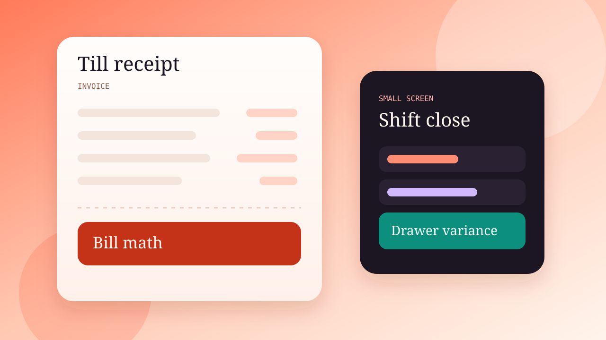

01 · Zurox Tech · Poster, not a screenshot
Restaurant POS
The till is where the day is won or lost. Sales become invoices, receipts print on thermal paper, and refunds have a defined path. At shift close the cash drawer is checked for variance. The layout is meant for a small screen, and automated tests cover bill math and stock.
- Till sales
- Invoices
- Thermal receipts
- Refunds
- Cash-drawer variance
- Shift close
- Small-screen layout
- Automated tests